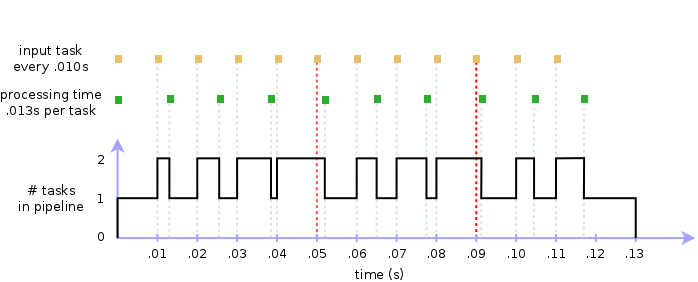

If a stage can’t process incoming tasks fast enough, we have a bottleneck situation at our hands. Imagine a stream of tasks feeding a pipeline at the rate of 100 tasks per second. A single-worker stage that takes 30% longer to process each task inevitably bottlenecks the workflow:
import time
from mpipe import OrderedStage, Pipeline
def echo(value):
print(value)
time.sleep(0.013)
return value
pipe1 = Pipeline(OrderedStage(echo))
for number in range(12):
pipe1.put(number)
time.sleep(0.010)
pipe1.put(None)
An easy way to fix this, of course, is to devote an additional worker to the stage:
import time
from mpipe import OrderedStage, Pipeline
def echo(value):
print(value)
time.sleep(0.013)
return value
pipe1 = Pipeline(OrderedStage(echo, 2))
for number in range(12):
pipe1.put(number)
time.sleep(0.010)
pipe1.put(None)
But what if our design limits us to a single worker stage? If adding workers is not an option, we can instead choose to filter inputs before they reach the problematic stage, by dropping tasks that exceed capacity. For example, we can limit the carrying capacity of the pipeline to, say, a maximum load of 2 tasks. If a task arrives while the pipeline is “full” (i.e. is currently working on two tasks) then the new task is thrown away. This way we are able to keep up with the input flow, granted we lose any tasks that exceed the preset bandwidth. Running such a filter in our scenario, we lose the 6th and 10th task:
Implementing the solution is easy: wrap the original pipeline into a FilterStage of a second pipeline:
import time
from mpipe import OrderedStage, FilterStage, Pipeline
def echo(value):
print(value)
time.sleep(0.013)
return value
pipe1 = Pipeline(OrderedStage(echo))
pipe2 = Pipeline(FilterStage((pipe1,), max_tasks=2))
for number in range(12):
pipe2.put(number)
time.sleep(0.010)
pipe1.put(None)
pipe2.put(None)
Running the above code shows the output below, the 6th and 10th task (index 5 and 9) conspicuously missing from the final result:
0
1
2
3
4
6
7
8
10
11